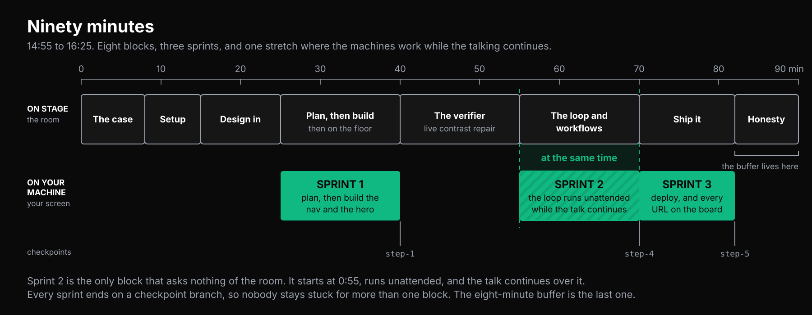
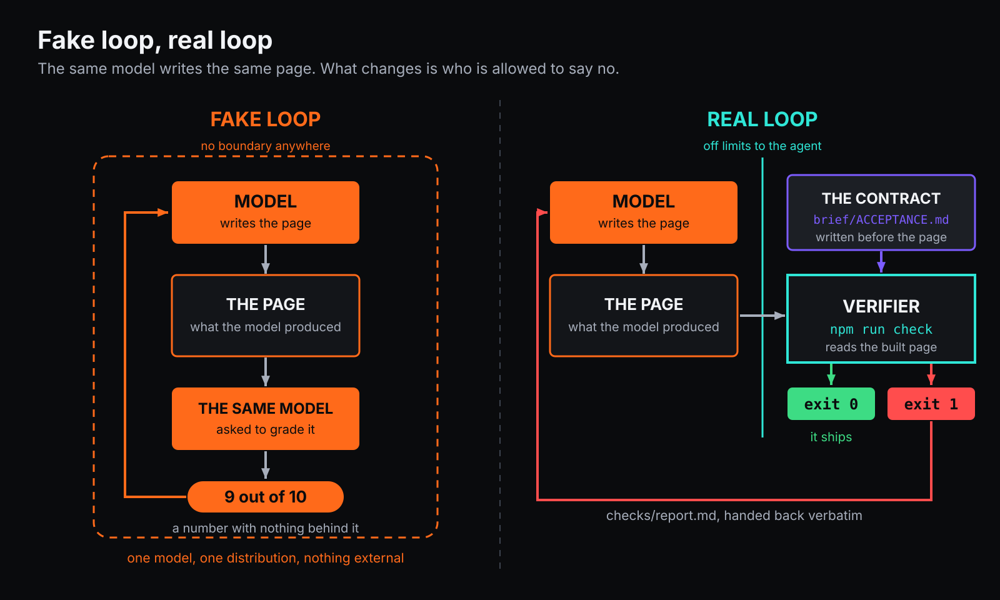
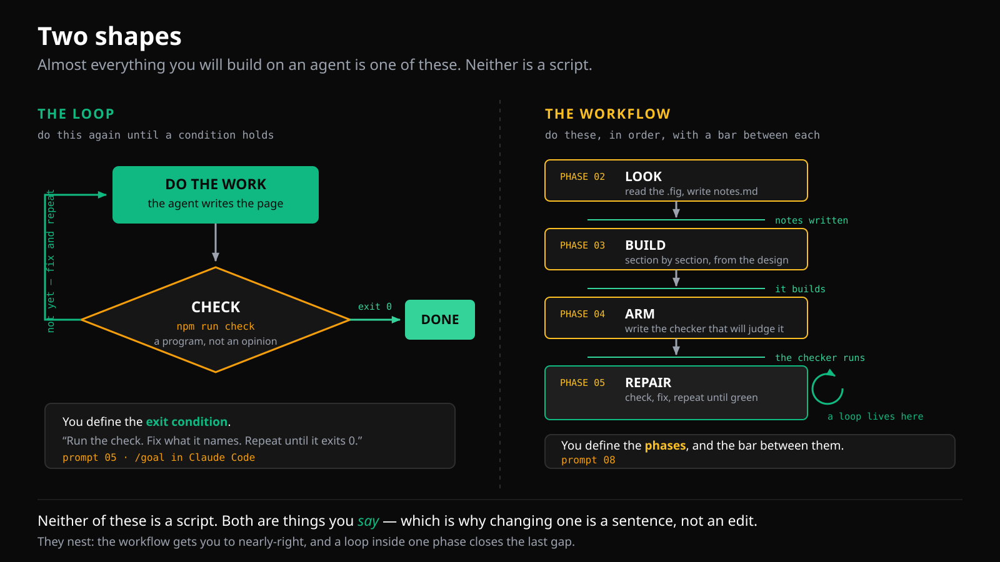
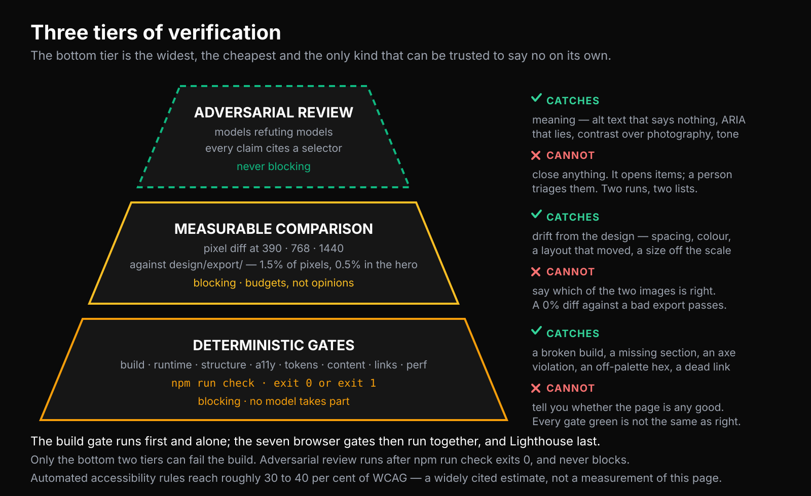
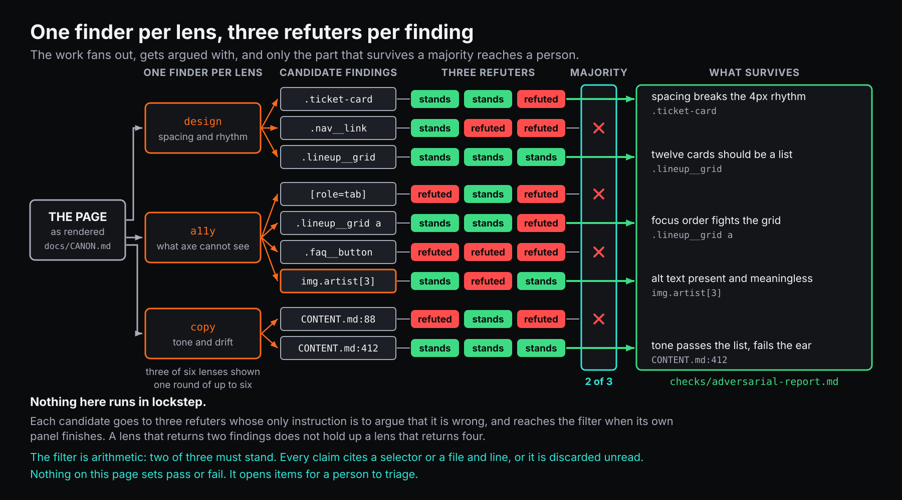

W trakcie warsztatu
Potrzebujesz designu i tej strony. Nie ma czego klonować ani czytać — całą resztę agent robi sobie sam.
Kiedy prompt 01 utworzy projekt, załóż w folderze projektu folder design i włóż do niego turbine.fig. Nie obok projektu: Claude Code pyta o zgodę, zanim przeczyta plik spoza folderu projektu.
Wklejaj każdy prompt w całości. Reguły w środku znaczą tyle samo co samo polecenie, a skrócenie promptu do pierwszego zdania to najczęstszy sposób na rozczarowującą odpowiedź.
Wszystko ze slajdów, na jednej stronie, żebyś mógł to przeczytać później, zamiast fotografować ekran. Obrazki są te same, co na ścianie, i możesz ich używać u siebie.
Dziewięćdziesiąt minut

Trzy odcinki pracy własnej, a ten środkowy chodzi na twoim komputerze, kiedy ja mówię. Nic tutaj nie wymaga, żeby poprzednia rzecz się udała — każdy prompt stoi sam, a zostanie w tyle nie kosztuje cię nic poza tym, co pominąłeś.
Z czym wychodzisz: adres działający w internecie, folder ze stroną i programem, który ją sprawdza, oraz osiem promptów, które w poniedziałek zadziałają na czymś, co nie jest stroną festiwalu.
Większość dem AI kończy się na wow
Wchodzi prompt. Wychodzi coś efektownego. Wszyscy biją brawo. A potem ktoś zadaje pytanie, na które demo nie było przygotowane:
Czy to zgadza się z designem? Czy kontrast jest legalny? Czy działa na telefonie? Czy to są prawdziwe teksty, czy wymyślone?
Brak odpowiedzi. Nie zła odpowiedź — brak mechanizmu, który mógłby jakąkolwiek wyprodukować.
Pętla ma sens tylko wtedy, gdy coś w niej potrafi powiedzieć nie, nie pytając o zgodę modelu językowego.
Pętla

Ciekawa nie jest strzałka, która generuje kod. Ciekawe jest pudełko, które odmawia.
Strzałkę powrotną napędza plik — raport napisany przez program — a nie wrażenie agenta na temat własnej pracy. Na tym polega cała różnica.
Prawdziwa pętla i udawana

Udawana pętla sprawia wrażenie produktywnej. Produkuje zdania w rodzaju „przejrzałem swoją pracę i ją poprawiłem", nie do odróżnienia od prawdziwej aż do momentu, w którym coś zewnętrznego się nie zgodzi.
Na obu diagramach ten sam model pisze tę samą stronę. Zmienia się to, kto ma prawo powiedzieć nie.
Gdzie samoocena wystarcza, a gdzie nie
| Wystarcza | Nie wystarcza |
|---|---|
| Czy to zdanie jest dobre | Czy to jest poprawne |
| Które z tych pięciu znalezisk jest najważniejsze | Czy to jest dostępne |
| Czy to brzmi jak ta sama marka | Czy to zgadza się z designem |
| Czy hierarchia jest czytelna | Czy to jest skończone |
Lewa kolumna nie ma zewnętrznej prawdy do sprawdzenia, więc przemyślana opinia jest najlepszym dostępnym narzędziem. Prawa kolumna ją ma — więc jej użyj i nie przyjmuj opinii w zamian.
Dwa kształty

Pętla to rób to znowu, aż warunek będzie spełniony. Ty definiujesz warunek wyjścia. → prompt 05 i /goal w Claude Code.
Workflow to zrób te rzeczy, w tej kolejności, z poprzeczką między każdą. Ty definiujesz fazy i to, co musi być prawdą, zanim zacznie się następna. → prompt 08.
Żadne z tego nie jest skryptem. Oba są rzeczami, które mówisz — i dlatego zmiana któregokolwiek to jedno zdanie, a nie edycja, test i ponowny deploy.
Zagnieżdżają się. Workflow doprowadza cię od zera do prawie-dobrze; pętla w jednej z jego faz domyka resztę.
Najpierw plan, potem budowanie
Najtańsza poprawka w całej pętli to ta zrobiona, zanim powstanie jakikolwiek kod.
W Claude Code naciskaj Shift+Tab, aż stopka powie plan mode on. Agent nie może wtedy niczego edytować, dopóki nie zaakceptujesz. W Codeksie poproś o plan i nie przyjmuj kodu, dopóki go nie przeczytasz:
Nie pisz jeszcze żadnego kodu. Powiedz mi, co znalazłeś i co zamierzasz zbudować,
sekcja po sekcji, i poczekaj.Tym właśnie jest prompt 02. Nie pisze zupełnie nic — patrzy na design i zdaje relację. Projektant, który przeczyta trzy akapity i powie „nie, lineup jest przed biletami", właśnie oszczędził dwadzieścia minut pewnego siebie budowania nie tego, co trzeba.
Najlepszy moment na wyłapanie nieporozumienia jest wtedy, kiedy jest ono jeszcze zdaniem.
Trzy poziomy sprawdzania

Dolny poziom jest tani, pewny i wąski. Górny łapie to, czego pozostałe nie potrafią, i jest najmniej niezawodną rzeczą w całym stosie. Żaden nie zastępuje drugiego, a system złożony z samego górnego poziomu to system, który zgadza się sam ze sobą.
Raport błędów jest interfejsem
To jest część, którą ludzie pomijają, i to ona sprawia, że pętla działa. Z checkera wraca plik, napisany jednocześnie dla dwóch czytelników: człowieka o drugiej w nocy i agenta, który nie pamięta poprzedniej iteracji.
**3. [check 07] kolor na stronie nie występuje w designie**
- Gdzie: linia opisowa w każdej karcie w sekcji lineup
- Oczekiwano: „text / secondary" z designu
- Jest: „text / muted" z designu — zmierzone 4,07:1 względem tła strony,
a tekst ciągły potrzebuje 4,5:1
- Wskazówka: muted jest zdefiniowany wyłącznie dla stopki i tekstów prawnychTego nie napisał żaden model. Zmierzył to i wypisał program. Każda linijka jest czymś, na czym agent może działać bez zgadywania: które kryterium, który element, czego oczekiwano, co faktycznie było.
Porównaj to z tym, co model mówi o własnej pracy — „poprawiłem kontrast w sekcji lineup" — i masz różnicę między raportem a zapewnieniem.
Reguła, która trzyma to wszystko: agent nigdy nie może edytować checkera. Powiedz to wprost w prompcie i tak to traktuj. W momencie, w którym sądzony może edytować sędziego, każdy kolejny zielony wynik nic nie znaczy.
Dlaczego świeży kontekst bije długi
Okno kontekstu to bufor, nie pamięć. Po czterdziestu minutach trzyma trzy porzucone podejścia, oryginalny brief sprzed sześćdziesięciu tysięcy tokenów i każdy zły zakręt, który pętla już zrobiła — a model wciąż waży własne wcześniejsze rozumowanie.
| Długa rozmowa | Świeże przejście |
|---|---|
| Pamięta wszystko, źle | Czyta raport — aktualne błędy |
| Waży własne stare rozumowanie | Czyta notes.md — co już próbowano i ile to kosztowało |
| Robi się mętna i wolna | Czyta notatki z designu |
Więc kiedy zaczyna dryfować:
Zapisz do notes.md, co zostało do zrobienia, w dziesięciu linijkach. Co próbowałeś,
co zadziałało, co nie i dlaczego.Potem zacznij nową sesję, wklej notes.md i jedź dalej. Notatki na dysku biją pamięć w kontekście. To dzięki nim iteracja 7 wie, że iteracja 3 próbowała już oczywistej rzeczy.
Dać agentowi design, a nie jego zdjęcie
Agent, który dostaje zrzut ekranu, wyprowadza każdy kolor i każdy wymiar z pikseli. Będzie prawie trafiał — jakiś pomarańczowy, jakieś odstępy — a prawie to dokładnie to, co oblewa test kontrastu i wygląda subtelnie źle obok prawdziwego designu.
Kiedy dostaje plik .fig, nie wyprowadza niczego. #FF6A1A jest w pliku.
To jest cały argument za daniem agentowi samego pliku.
Kiedy jeden agent to za mało

Górny poziom tej piramidy to model sprawdzający model, a model zapytany „czy to jest dobre?" powie, że tak. Lekarstwo jest strukturalne: kilka przebiegów o różnych zadaniach i runda, której jedynym celem jest obalanie znalezisk.
Jeden przebieg szuka problemów z designem, jeden z dostępnością, jeden z tekstami. Każdy kandydat musi wskazać konkretny element — twierdzenie, które nie umie na nic wskazać, ląduje w koszu bez czytania. Potem każde znalezisko idzie z powrotem, żeby zostać obalone, i raportowane jest tylko to, co przeżyje.
Prompt 07 to jednoagentowa wersja dokładnie tego, zwinięta do jednej wiadomości: popatrz przez kilka soczewek, a potem argumentuj przeciwko każdemu znalezisku z trzech stron — czy to prawda, czy to ma znaczenie, czy to już jest obsłużone — zanim powiesz je na głos. Słabsze niż trzy niezależne agenty i nie wymaga niczego instalować.
Nadal jest to najmniej niezawodna rzecz, jaką zrobisz tego dnia. Warto ją robić, bo alternatywą jest nie patrzeć.
Publikacja: strona, która poszła, musi być tą, która przeszła
npm run build
npx netlify deploy --prod --dir=distPoprosi o zalogowanie, potem o wybór albo utworzenie strony, a na końcu wypisze adres. Ten adres jest sensem całych dziewięćdziesięciu minut.
Jeszcze jeden krok, i tego akurat nikt nie robi:
Pobierz adres, który przed chwilą opublikowałeś, i porównaj to, co zwrócił serwer,
ze stroną w dist/. Jeśli się różnią, powiedz mi dokładnie czym.Wszystko wcześniej dowodzi, że jakaś strona przeszła. Dopiero to dowodzi, że strona, która przeszła, jest stroną, która poszła. Rozjeżdżają się częściej, niż by się wydawało — stary build, nie ten folder, host dokładający własny kod.
To, co przydarzy się tobie
Test dostępności na stronie referencyjnej tego warsztatu był zielony. Zero naruszeń, trzy szerokości, dwa razy pod rząd. Perfekcyjny wynik Lighthouse.
Pięć z dziewięciu fragmentów tekstu w hero było poniżej legalnego minimum kontrastu względem zdjęcia za nimi. Największy, pierwszy, najczęściej czytany tekst na stronie.
Powód: axe nie ocenia tekstu na tle obrazu. Nie oblewa go — oznacza parę jako incomplete, a w teście, którego reguła brzmi „zero naruszeń", incomplete jest nie do odróżnienia od poprawnego.
Czytanie CSS też by tego nie znalazło. Tłem było tam zdjęcie, dwie półprzezroczyste nakładki i gradient złożone razem, a żadna linijka CSS nigdzie nie mówi, jaki kolor z tego wychodzi.
Zielony znaczy: brak znanego defektu. Wiedzieć, gdzie kończą się twoje testy — to jest robota.
Gdzie pętle naprawdę zawodzą
| Wygląda jak | Jest | Co zrobić |
|---|---|---|
| Test robi się zielony, a nic nie zostało naprawione | Agent zedytował test | Powiedz to wprost, przywróć plik i przeczytaj diff — to najbardziej pouczająca rzecz, jaką zobaczysz tego dnia |
| Dwa złe stany, na przemian | Dwa wymagania, które nie mogą być jednocześnie spełnione | Zatrzymaj to. Sprzeczność jest w briefie, nie w kodzie |
| Nie przestaje, choć jest gotowe | Nic nie uruchamia testu najpierw | Sprawdzaj przed naprawianiem, w każdej rundzie |
| Robi się mętne i wolne | Kontekst się zapełnił | Zapisz stan do pliku, zacznij od nowa, wklej plik |
| „Teraz działa", a nie działa | Raportuje, zamiast mierzyć | Wierz wyłącznie kodowi wyjścia |
| Nic, przez dłuższą chwilę | Czeka na coś, co nie ma terminu | Każdy krok potrzebuje limitu czasu. Ten projekt wpadł w to trzy razy: sześć minut, siedem i godzina |
Co się stało, kiedy uruchomiłem te prompty
Nie wyreżyserowane demo. Pusty folder poza jakimkolwiek repozytorium, Codex, prompty wklejone po kolei, nic więcej w zasięgu.
| Prompt | Czas | Co z tego wyszło |
|---|---|---|
| 01 — start | 107 s | projekt Astro + Tailwind, działający dev server |
| 03 — buduj | 41 s | hero, z wartości, które dostał |
| 04 — napisz checker | 495 s | check.mjs, 264 linijki — plus testy do checkera i dokument opisujący go, o które nikt nie prosił |
| 05 — pętla | 46 s | ruszyła i zatrzymała się z właściwego powodu |
Jedenaście minut, bez nadzoru, od zera. Decyzja warta uwagi to ta, o którą nikt nie prosił: agent sam postanowił traktować wyniki incomplete z axe jako błędy. Wzięło się to z jednego zdania w prompcie 04 — „test, który nie może się wykonać, jest porażką, nigdy pominięciem" — i jest to dokładnie ta ślepa plamka opisana wyżej, którą człowiekowi zajęło popołudnie.
I co poszło nie tak przy budowaniu tego
Trzynaście incydentów. Dziewięć było awariami weryfikatora albo oprzyrządowania, nie strony.
| Co się stało | Dlaczego warto o tym wiedzieć |
|---|---|
| Dziewięć bramek przez cały przebieg mierzyło cudzą stronę — 427 pewnych siebie, poprawnie sformatowanych błędów | Weryfikator, który jest pewny i nie ma racji, jest gorszy niż żaden |
| axe przepuścił pustą stronę. Zero naruszeń, trzy szerokości, zielono | Pomiar niczego wygląda dokładnie jak pomiar doskonałości |
| Pętla wisiała godzinę na wejściu, którego nikt nie zamknął | Każdy krok potrzebuje terminu. Trzeci raz w jednym projekcie |
| Oprzyrządowanie dowodowe wymyśliło cztery czyste iteracje z przebiegu, który został zabity | Brak wyniku odczytany jako sukces — i jedyny przypadek, który wyprodukował tabelkę |
| Bramka była zielona, a hero nieczytelne | Narzędzie działało dokładnie zgodnie z dokumentacją, a dokumentacja leżała tam, gdzie nikt nie zagląda |
Wzór pod tym wszystkim to jedno zdanie: brak wyniku nie jest wynikiem pozytywnym. Wpisz to do swojego checkera, zanim napiszesz cokolwiek innego.
Weź to do pracy w poniedziałek
Nie zaczynaj od całej strony. Zacznij od jednej bramki.
- Wybierz test, który twój zespół i tak robi ręcznie i którego nie znosi.
- Zrób z niego program, który kończy się kodem 0 albo 1.
- Wystaw jego wynik tam, gdzie agent może go przeczytać — plik, nie terminal, który musi
zapamiętać.
- Dopiero wtedy postaw przed nim agenta.
Pętla jest łatwa. Robotą jest wyrocznia.
Część uczciwa
- Automatyczne narzędzia do dostępności sięgają jakichś 30–40% tego, czego naprawdę
wymaga WCAG. Zielony znaczy brak znanego defektu, nigdy dostępne.
- Porównanie pikseli wykrywa, że coś się zmieniło. Nie ma pojęcia, czy zmiana była poprawą.
- Nic z tego wszystkiego nie ma zdania na temat tego, czy design jest dobry.
- Prompt 07 używa modelu do sprawdzania modelu. Łapie to, czego programy nie potrafią, i jest
najmniej niezawodną częścią całości. Druga opinia, nie wyrocznia.
Osiem promptów
Po kolei. Każdy stoi sam, więc jeśli któryś idzie źle, możesz powiedzieć „przestań, idziemy dalej” i wkleić następny.
Prompt 01
Start
Na wejściu pusty folder, na wyjściu strona działająca na twoim komputerze. Nic jeszcze nie jest zaprojektowane; to tylko warsztat pracy.
Załóż w tym folderze nowy projekt strony internetowej.
Użyj Astro z Tailwind CSS. Statyczny output — bez Reacta, Vue ani Svelte, bez serwera, bez
bazy danych. Node jest już zainstalowany.
Potem uruchom serwer deweloperski i podaj mi adres, który mam otworzyć w przeglądarce.
Nie buduj jeszcze żadnych stron. Nie wymyślaj żadnej treści. Design przyjdzie w następnym
kroku i chcę, żeby strona była wtedy nadal pusta.
W trakcie pracy mów mi jedną linijką, co robi każda komenda. Nigdy wcześniej nie używałem
terminala i chcę nadążać.Codex zapyta, czy ufa temu folderowi. Odpowiedz tak. Nie pracuje w katalogu, o którym mu nie powiedziano, więc w nowym, pustym folderze pierwsze, co zrobi, to zatrzyma się i zapyta. To narzędzie jest ostrożne, a nie coś się psuje.
Co powinieneś zobaczyć. Kilka minut instalowania, potem linijkę w rodzaju Local http://localhost:4321/. Otwórz ją. Dostaniesz stronę zastępczą Astro — prostą, brzydką, poprawną.
Terminal jest teraz zajęty. To okno uruchamia stronę i nie przyjmie kolejnej komendy. Zostaw je i otwórz drugie. W Claude Code i w Codeksie możesz po prostu pisać dalej; one to ogarniają.
Jeśli coś pójdzie nie tak
| Co widzisz | Powiedz to |
|---|---|
| I tak zaczyna budować landing page | Stop. Cofnij strony, które utworzyłeś. Chcę pusty projekt, dopóki nie dam ci designu. |
Not inside a trusted directory | To Codex pyta o zgodę. Odpowiedz tak albo najpierw uruchom w folderze git init. |
command not found: npm | Node nie jest zainstalowany. Wróć na zakładkę Przed albo przejdź tam na wersję w przeglądarce. |
| Prosi o wybór szablonu | Wybierz minimalny albo pusty szablon. Bez przykładowej treści. |
| „Katalog nie jest pusty" | Włożyłeś folder z designem przed tym promptem. Wyjmij go, uruchom ten prompt i włóż go z powrotem przed promptem 02. |
| Przez dwie minuty nic się nie dzieje | Instaluje. Instalowanie wygląda dokładnie jak zawieszenie. Daj mu pięć. |
Dlaczego to jest tak sformułowane
„Nie buduj jeszcze żadnych stron." Zostawiony sam sobie agent zapełni ciszę — wymyśli hero, siatkę funkcji i trzy opinie klientów, zanim powiesz słowo o tym, czego chcesz. Mówienie, czego nie robić, to połowa promptowania, i to jest ta połowa, którą ludzie pomijają.
„Mów mi jedną linijką, co robi każda komenda." Możesz o to prosić. Agent to nie tylko maszyna produkująca pliki; to jedyny cierpliwy tłumacz, jakiego będziesz miał przez całe popołudnie.
Prompt 02
Popatrz na design
Agent czyta design i mówi ci, co znalazł. Strony jeszcze nie pisze. To najtańsza poprawka, jaką dostaniesz tego dnia: błędne założenie kosztuje tu jedno zdanie, a dwadzieścia minut wygenerowanego kodu — później.
Najpierw włóż plik do projektu
- Na stronie warsztatu kliknij Pobierz turbine.fig.
- W folderze projektu załóż folder
designi włóż do niego plik.
Druga karta na tej stronie otwiera ten sam projekt w Figmie, żeby oglądać go, kiedy agent pracuje.
W projekcie, nie obok niego. Agent pracuje wewnątrz folderu projektu. Claude Code pyta, zanim przeczyta cokolwiek spoza tego folderu, a plik piętro wyżej zamienia się w pytanie o zgodę, na którym agent musi się zatrzymać.
Plik, a nie jego zdjęcie. PNG to zdjęcie designu: agent musi wyprowadzić każdy kolor i każdy wymiar z pikseli, i będzie prawie trafiał — a prawie to dokładnie to, co oblewa test kontrastu i wygląda subtelnie źle obok oryginału. Plik .fig to sam design: tekst jako tekst, kolory jako wartości, zmienne, komponenty i zdjęcia. Nie ma czego zgadywać.
Twój agent nie ma programu, który otwiera .fig, więc rozkoduje plik sam. Zajmie mu to dziesięć do piętnastu minut i może przy tym zainstalować z internetu małą paczkę. Na sali jest sieć, więc mu na to pozwól — jeśli Codex zapyta o dostęp do sieci, odpowiedz tak.
W tym projekcie jest folder design, a w nim plik .fig. To jest sam plik Figmy, zapisany
przez „Save local copy". To nie jest obrazek: to cały design jako dane — każdy tekst,
kolor, zmienna, komponent i zdjęcie.
Pracuj na tym jednym pliku i na niczym więcej. Nie szukaj na tym komputerze designu,
specyfikacji, obrazków referencyjnych ani niczego innego o tym projekcie: nic więcej nie ma,
a cokolwiek znajdziesz, nie jest designem. Jeśli plik wymienia coś, czego w nim nie ma,
wpisz to w punkt 6, zamiast tego szukać.
Nie ma narzędzia, które go otwiera, więc go rozkoduj. Co wiadomo o formacie:
- Plik .fig to zip. Design jest w środku, w canvas.fig. thumbnail.png to tylko mały
podgląd: nie pracuj na nim.
- canvas.fig zaczyna się od bajtów „fig-kiwi" i numeru wersji, potem są kawałki, każdy
poprzedzony swoją długością. Pierwszy to schemat w binarnym formacie kiwi
(github.com/evanw/kiwi); drugi to dokument zakodowany tym schematem. Każdy kawałek jest
skompresowany, surowym deflate albo zstd.
- Folder images w zipie trzyma zdjęcia, nazwane hashem, którego używają wypełnienia.
- Pomiń wszystko, co ma isSoftDeleted, i wszystko, co należy do czegoś, co to ma.
Zostało usunięte w Figmie, a wciąż siedzi w pliku. Zmienna w usuniętej kolekcji sama nie
jest oznaczona — pomiń ją też.
- Tekst w komponencie może pochodzić z właściwości komponentu i z nadpisań. Jeśli każda
karta tego samego rodzaju pokazuje te same słowa, czytasz komponent zamiast instancji.
Rozwiąż to, zanim zaufasz jakiemukolwiek tekstowi.
Możesz zainstalować paczkę, żeby to zrobić; sieć jest dostępna. Rozkodowane dane i zdjęcia
trzymaj w folderze design-data w tym projekcie. Nie pisz jeszcze żadnego kodu strony.
Potem spisz design jako dokumentację, w folderze docs, żeby nikt — ani ja, ani ty, ani nowa
sesja — nie musiał już otwierać pliku .fig. Każdy dokument zapisuj od razu, gdy przeczytasz
tę część pliku, a nie wszystkie na końcu:
- docs/sections.md: każda sekcja, w kolejności od góry strony, i co jest w każdej z nich
- docs/colours.md: każdy kolor, po nazwie z designu, z dokładną wartością i do czego jest
używany
- docs/typography.md: każdy font i styl tekstu, z rozmiarem, grubością, interlinią
i odstępem między literami, i gdzie który jest użyty
- docs/layout.md: każda szerokość, którą design obejmuje, a przy każdej odstępy, rozmiary,
zaokrojenia rogów i kolumny
- docs/components.md: każdy komponent, z jego wariantami i stanami
- docs/copy.md: każdy tekst, sekcja po sekcji, słowo w słowo, razem z tekstami
alternatywnymi i etykietami, których nie pokazuje żadna ramka
- docs/images.md: każdy obraz, z jego plikiem w design-data, miejscem użycia, rozmiarem
i tekstem alternatywnym
Przepisuj każdą wartość dokładnie tak, jak jest w pliku: bez zaokrąglania, bez zmiany nazw.
Od teraz te dokumenty są designem i każdy kolejny krok czyta je zamiast pliku .fig. Kiedy
okaże się, że jakiejś wartości brakuje, poprawka polega na tym, żeby najpierw dopisać ją do
właściwego dokumentu.
Potem pokaż mi listę, a jej punkt 6 zapisz do notes.md:
1. Każdą sekcję, w kolejności od góry strony.
2. Każdy kolor, po nazwie z designu, z dokładną wartością.
3. Każdy rozmiar tekstu i gdzie który jest użyty.
4. Każdą szerokość, którą design obejmuje.
5. Każdy dokument, który zapisałeś w docs, i co w nim jest, po jednej linijce.
6. Wszystko, co w pliku się nie zgadza albo czego w nim nie ma, a co inaczej musiałbyś
zgadnąć.
Punkt 6 obchodzi mnie najbardziej. Bądź konkretny i bądź szczery: „w pliku jest stan hover,
do którego nie mam żadnych wartości" jest warte więcej niż pewne siebie zgadnięcie.
Potem zatrzymaj się i poczekaj, aż odpowiem na punkt 6.Co powinieneś zobaczyć. Dziesięć do piętnastu minut, w których agent rozgryza plik. W trakcie zapełnia się folder docs — kolory, typografia, layout, komponenty, teksty, obrazy — a na końcu w czacie jest lista. Przeczytaj ją. Dwie rzeczy są warte twojej uwagi:
- Czy to opisuje twój design? Jeśli mówi „hero, trzy kafle i tabela cennika", a twój
design ma lineup dwunastu artystów, to patrzy na coś innego albo na nic.
- Co jest w punkcie 6? Ta lista to brief, którego zapomniałeś napisać. Odpowiedz na nią
teraz, własnymi słowami. Jeśli punkt 6 jest pusty, agent zgaduje i nie powiedział ci o tym — zapytaj: co z tego przeczytałeś, a co wywnioskowałeś?
docs będzie ważny później. To design spisany na piśmie: każdy kolejny prompt buduje i sprawdza według tych dokumentów, a nie według pliku .fig, i możesz je otworzyć sam — to zwykły tekst. W notes.md są otwarte pytania, a jeśli kiedyś będziesz musiał zacząć nową sesję, te dwa miejsca razem to wszystko, co nowa sesja wie.
Jeśli coś pójdzie nie tak
| Co widzisz | Powiedz to |
|---|---|
| Zaczyna budować | Stop. Pytałem, co znalazłeś, nie o kod. Cofnij wszystko, co napisałeś. |
| Zostawia wszystko na jeden wielki opis na końcu | Zapisz teraz docs/colours.md z tego, co już przeczytałeś, i jedź dalej. |
| Dokument jest ubogi albo brakuje w nim wartości | W docs/typography.md nie ma interlinii. Odczytaj je z pliku i dopisz. |
| Prosi o przeczytanie pliku spoza folderu | Plik .fig leży obok projektu, nie w nim. Przenieś go do design w projekcie i powiedz Jest teraz w design. |
| Przeszukuje dysk albo czyta inny projekt | Stop. Design to plik .fig w design i nic więcej. Nie używaj niczego, co znalazłeś poza tym projektem. |
| „Nie mogę otworzyć pliku binarnego" | To jest zip. Rozpakuj go i rozkoduj canvas.fig tak, jak opisałem w poprzedniej wiadomości. |
| Opisuje małą, rozmytą stronę | Przeczytał thumbnail.png. To jest podgląd. Pracuj na canvas.fig. |
zstd nieobsługiwany albo dekompresja się sypie | Twój Node jest starszy niż 22.15. Zainstaluj paczkę, która czyta zstd, i działaj dalej. |
| Codex pyta o dostęp do sieci | Odpowiedz tak. Instalacja paczki go wymaga, a sieć na sali jest. |
| Claude Code pyta przed każdą komendą | Rozkodowanie to dziesiątki małych komend. Odpowiedz tak i wybierz opcję, która przestaje pytać o ten rodzaj komend. |
| Każda karta artysty ma to samo imię | Czytasz komponent, a nie instancje. Rozwiąż właściwości komponentu i nadpisania. |
| Kolory wracają jako „ciemny szary" | Podaj dokładne wartości. Jeśli nie potrafisz odczytać dokładnych, powiedz to — nie opisuj ich. |
| Po dziesięciu minutach dalej nie umie przeczytać pliku | Pobierz gotową paczkę ze strony warsztatu, włóż ją do design i powiedz Użyj paczki z folderu design. |
Po co ten prompt w ogóle istnieje
Nie produkuje strony. I o to chodzi.
Wszystko, co psuje się później w pętli design→kod, popsuło się właśnie tutaj, niewidocznie: agent zgadł kolor, założył breakpoint, wymyślił słowo. Zmuszenie go, żeby powiedział, co zobaczył — zanim zdąży ukryć zgadywankę w czterystu linijkach kodu — to najwyższy zwrot z sekundy w całej sesji.
To jest też pierwsza pętla tego dnia, i nie musiałeś jej ustawiać. Agent nigdy nie otwierał pliku .fig. Dałeś mu pięć faktów o formacie; napisał dekoder, spojrzał, co wyszło, i próbował dalej, aż imiona na kartach były prawdziwymi imionami. Tak wygląda wszystko po prompcie 04.
W Claude Code ten sam pomysł jest wbudowany jako plan mode (Shift+Tab, aż stopka powie plan mode on): najpierw popatrz, powiedz, co znalazłeś, niczego nie zmieniaj. Ten prompt to ten pomysł wypisany ręcznie, żeby działał w dowolnym agencie.
Prompt 03
Zbuduj to
Teraz pisze stronę: całą, za jednym razem. Potem ty ją przeglądasz, sekcja po sekcji, we własnym tempie. Budowanie cię nie potrzebuje; przeglądanie tak.
Zbuduj teraz stronę, na podstawie designu. Czytaj docs i notes.md; nie rozkodowuj pliku .fig
jeszcze raz.
Zbuduj całą stronę za jednym razem: każdą sekcję z docs/sections.md, w tej kolejności. Nie
zatrzymuj się między sekcjami, żeby mnie pytać. Kiedy skończysz, powiedz mi, które sekcje
zbudowałeś, po jednej linijce, i podaj adres do otwarcia.
Reguły, wszystkie nienegocjowalne:
- Każdy kolor i każdy rozmiar pochodzi z docs. Jeśli wartości, której potrzebujesz, tam nie
ma, poszukaj jej w design-data; jeśli tam jest, najpierw dopisz ją do właściwego
dokumentu, a potem użyj. Jeśli nie ma jej nigdzie, nie wybieraj sam: to pytanie do
notes.md, niżej.
- Każde słowo pochodzi z docs/copy.md. Nie pisz tekstów. Nie poprawiaj tekstów. Jeśli
jakiegoś fragmentu brakuje, zapisz to do notes.md — nie zapychaj dziury.
- Każde zdjęcie pochodzi z designu: użyj obrazów wymienionych w docs/images.md, nigdy
zastępczych.
- Do samej strony nie wchodzi nic nowego: żaden framework UI, żadna biblioteka
komponentów, żaden serwis z fontami ani ikonami. Strona jest z Astro i Tailwinda.
- Strona musi działać z niezaładowanymi obrazkami i z wyłączonym JavaScriptem. Wszystko,
co sprytne, jest dodatkiem na czymś, co już działa bez tego.
Jeśli design czegoś nie mówi, nie zgaduj. Zapisz pytanie do notes.md, wybierz odczyt, który
uważasz za najbardziej prawdopodobny, powiedz mi jedno i drugie, i jedź dalej. Wolę poprawić
jedno założenie niż odkryć sześć.Co powinieneś zobaczyć. Kilka minut pracy, potem listę sekcji i adres. Otwórz go. Postaw obok designu w Figmie i idź w dół strony, sekcja po sekcji. Każdą rzecz, która jest nie tak, nazwij — po ludzku, tak jak powiedziałbyś juniorowi:
Odstęp pod nagłówkiem jest za ciasny, a pomarańczowy to nie ten pomarańczowy.
To jest całkowicie dobre zgłoszenie błędu. Nie potrzebujesz słownictwa. Możesz wysyłać uwagi po jednej albo kilka w jednej wiadomości; jedno i drugie działa.
Jeśli coś pójdzie nie tak
| Co widzisz | Powiedz to |
|---|---|
| Zatrzymuje się po jednej sekcji i pyta | Nie czekaj na mnie. Zbuduj całą stronę, potem mi pokaż. |
| Tekst, którego nigdy nie widziałeś | Skąd wzięło się to zdanie? Zastąp je tekstem z docs/copy.md. |
| Szare pudełko tam, gdzie powinno być zdjęcie | Użyj tu obrazu, który wymienia docs/images.md. |
| Kolor, który jest prawie dobry | To nie jest wartość z docs/colours.md. Użyj dokładnej i powiedz mi, jak się nazywa. |
| Znowu zaczyna rozkodowywać .fig | Stop. Wszystko, czego potrzebujesz, jest w docs i notes.md. |
| Potrzebuje wartości, której dokumenty nie mają | Znajdź ją w design-data, dopisz do właściwego dokumentu w docs, potem jej użyj. |
| Mówi, że skończył, a wyraźnie nie | Które sekcje zbudowałeś, a których jeszcze nie ma? Wypisz jedne i drugie. |
| Z każdą chwilą jest wolniejszy i mętniejszy | Kończy mu się kontekst. Powiedz Zaktualizuj notes.md tym, gdzie jesteśmy, zacznij nową sesję, powiedz Przeczytaj docs i notes.md i buduj dalej i jedź dalej. |
Dwie rzeczy warte zauważenia, kiedy pracuje
Jest szybszy od ciebie, a to nie to samo co lepszy. Cała strona pojawi się w czasie, w którym porządnie obejrzysz jedną sekcję. Nie pozwól, żeby tempo budowania narzuciło tempo oglądania: bierz sekcje po jednej i mów, co jest nie tak, zanim przejdziesz do następnej.
Nic tutaj jeszcze niczego nie sprawdziło. Na koniec tego promptu strona może wyglądać na skończoną. Do tej pory oceniła ją dokładnie jedna rzecz: twoje oczy, na twoim ekranie, przy twojej szerokości okna. Prompt 04 jest tym, co to zmienia.
Prompt 04
Napisz checker
To jest ten warsztat. Wszystko wcześniej było doprowadzaniem strony na ekran. Wszystko później zależy od tego, co stanie się tutaj.
Za chwilę poprosisz agenta, żeby zbudował rzecz, która będzie oceniać jego własną pracę — a w następnym prompcie zabronisz mu jej kiedykolwiek dotykać.
Zauważ, czego ten prompt nie mówi. Nie podaje koloru, szerokości, rozmiaru czcionki ani sekcji. To wszystko jest w designie, a design agent przeczytał w prompcie 02. Prompt, który powtarza design, ma dwie kopie prawdy — a dzień, w którym się rozjadą, jest dniem, w którym checker zaczyna kłamać.
Napisz teraz program, który sprawdza twoją własną pracę względem designu.
To musi być program, nie opinia. Uruchamia się, patrzy na prawdziwą stronę w prawdziwej
przeglądarce i kończy kodem 0, jeśli wszystko jest w porządku, a kodem różnym od zera,
jeśli cokolwiek jest nie tak. Nigdy nie pyta modelu językowego, nigdy nie pyta mnie i
dwa razy na tej samej stronie daje tę samą odpowiedź.
Spraw, żeby uruchamiała go komenda „npm run check". Zainstaluj, co potrzebne, żeby
sterować prawdziwą przeglądarką i testować dostępność. To są narzędzia do sprawdzania;
żadne z nich nie wchodzi do strony.
Domyślnie sprawdza stronę uruchomioną na tym komputerze. Musi też przyjmować adres —
npm run check -- --url https://… — i uruchamiać te same testy na tamtej stronie, żeby
później mógł ocenić też stronę na żywo.
Co sprawdzać, wyprowadź z dokumentów w docs, nie ode mnie. Minimum, i to względem strony tak, jak
renderuje ją przeglądarka, a nie względem kodu źródłowego:
1. że projekt się buduje, bez błędów
2. że wczytanie strony nie produkuje błędów w konsoli przeglądarki
3. że każda sekcja, którą definiuje design, jest obecna i w kolejności z designu
4. że jest dostępna, przy każdej szerokości, którą design określa
5. że każdy kolor, który strona maluje, jest kolorem z designu — cokolwiek innego to błąd
6. że każdy fragment tekstu z designu jest na stronie
7. że nic nie wystaje w bok przy najwęższej szerokości, którą design określa
8. że każdy obrazek ma tekst alternatywny i że nie jest nim nazwa pliku
Kiedy coś nie przechodzi, raport musi powiedzieć cztery rzeczy: co nie przeszło, gdzie na
stronie, co według designu powinno tam być i co faktycznie tam było. „Problem
z kontrastem na stronie" jest bezużyteczne. Nazwanie elementu, wartości oczekiwanej,
wartości zmierzonej i progu — to jest cała robota.
Zapisz raport do pliku, nie tylko wypisz go na ekran, bo w następnym kroku podam ci ten
plik z powrotem. Powiedz mi, jak go nazwałeś.
Dwie reguły dotyczące samego checkera:
- Jeśli test nie może się wykonać — przeglądarka nie wstaje, strona się nie wczytuje,
brakuje dokumentu w docs — to jest PORAŻKA, nigdy zaliczenie i nigdy ciche pominięcie.
Test, który się nie odbył, nie może wyglądać jak test, który przeszedł.
- Nie rozluźniaj testów, żeby przechodziły. Spodziewam się, że to się wywali. Jeśli
przejdzie za pierwszym razem, uznam, że nic nie sprawdza.
Kiedy będzie gotowe, uruchom to i pokaż mi wynik.Co powinieneś zobaczyć. Czerwień. Sporo czerwieni.
To jest poprawny wynik i warto z nim posiedzieć chwilę. Strona, z której dwie minuty temu byłeś w miarę zadowolony, właśnie usłyszała od programu dokładnie, co jest z nią nie tak — z nazwami elementów i zmierzonymi liczbami.
Nie podałeś mu tych liczb. Poszedł po nie do designu.
Dlaczego ten prompt nie nazywa niczego konkretnego
Każdy punkt z tej listy jest pytaniem, a odpowiedź leży w pliku designu. Poproś o „zero naruszeń dostępności przy każdej szerokości, którą design określa", a agent musi pójść i sprawdzić, jakie to szerokości. Poproś o nie po numerach, a właśnie po cichu przeniosłeś design do promptu, gdzie nikt nie pamięta, żeby go aktualizować.
Z tego samego powodu prompt nie nazywa biblioteki testowej ani pliku. To są decyzje agenta, a agent radzi sobie z nimi lepiej niż wiadomość napisana z wyprzedzeniem dla maszyny, która może być jednym z dwóch różnych narzędzi.
To, co prompt ustala, to część, której żadne narzędzie nie wybierze za ciebie:
- musi to być program, a jego odpowiedź nie może pochodzić od modelu
- raport jest dla czytelnika, którego przy tym nie było — element, oczekiwane, faktyczne, próg
- test, który nie może się wykonać, jest porażką
- rozluźnione testy są gorsze niż żadne
- przyjmuje adres, bo prompt 06 skieruje go na stronę na żywo
Zdanie, które robi najwięcej roboty
Test, który nie może się wykonać, jest PORAŻKĄ, nigdy zaliczeniem i nigdy cichym pominięciem.
W próbnym przebiegu tych promptów agent, który dostał tę jedną linijkę, sam postanowił traktować niejednoznaczne wyniki swojego narzędzia do dostępności jako błędy, a nie zaliczenia. Ta decyzja łapie całą klasę defektów, których bramka „zero naruszeń" nie widzi, i nikt o nią nie prosił. Wypadła z jednego zdania o tym, co znaczy brak wyniku.
Prompt 05
Pętla
Masz stronę i masz coś, co potrafi jej powiedzieć „nie". To jest zdanie, które ustawia je w kółko.
Nie ma tu skryptu i nie ma czego instalować. Pętla to akapit.
Uruchom npm run check.
Jeśli kończy się kodem 0, zatrzymaj się i powiedz mi — skończyliśmy.
Jeśli nie, przeczytaj raport, który zapisał, i napraw to, co wymienia. Potem uruchom
npm run check jeszcze raz. Powtarzaj, aż skończy się kodem 0.
Pracuj w kolejności, w jakiej raport wymienia rzeczy. Naprawiaj przyczynę, nie objaw:
jeśli kolor jest zły, użyj tego z designu, nie przesuwaj go, aż liczba drgnie. Rób
najmniejszą zmianę, która usuwa dany błąd, i nie ruszaj niczego, co już przechodziło.
Trzy reguły, a pierwsza znaczy więcej niż dwie pozostałe:
1. NIGDY nie zmieniaj checkera, żeby test przeszedł. Ani progu, ani pominiętej asercji,
ani wyłączonej reguły. Jeśli naprawdę uważasz, że jakiś test jest zły, ZATRZYMAJ SIĘ,
powiedz mi który i dlaczego, i nie zmieniaj niczego.
2. Nie dodawaj niczego nowego do strony i nie wymyślaj tekstów.
3. Jeśli ten sam błąd przeżyje trzy próby, zatrzymaj się i powiedz mi, co próbowałeś za
każdym razem i co się stało. Trzy nieudane naprawy zwykle znaczą, że design prosi
o dwie rzeczy, które nie mogą być jednocześnie prawdziwe, i czwarta próba tego nie
rozwiąże.
Zapisuj do notes.md na bieżąco, co próbowałeś i co się stało, żeby nowa sesja mogła to
podjąć. Pracuj dalej sam. Nie proś mnie o potwierdzenie po każdej rundzie.Claude Code: zrób z tego strukturę
Claude Code ma to wbudowane. Zamiast ufać, że agent nie przestanie, możesz sprawić, żeby strukturalnie nie mógł:
/goal npm run check exits 0Sesja się nie skończy, dopóki to nie będzie prawdą. Nie „dopóki agent nie uwierzy, że jest prawdą" — komenda faktycznie się uruchamia, a decyduje jej kod wyjścia. Wklej najpierw prompt powyżej, potem linijkę z /goal.
Codex tego nie ma. Tam mechanizmem jest akapit: działa, tylko opiera się na tym, że agent robi, co mu powiedziano, a nie na tym, że wymusza to narzędzie. Patrz na output i powiedz jedź dalej, jeśli zatrzyma się za wcześnie.
Co powinieneś zobaczyć. Kilka minut: sprawdź → napraw → sprawdź. Liczba błędów spada. Gdzieś w środku prawdopodobnie wzrośnie o jeden — naprawa, która zepsuła coś innego — i znowu zacznie spadać.
Potem:
✓ all checks passedNikt tego nie zdecydował. Program zakończył się kodem 0.
Jeśli coś pójdzie nie tak
| Co widzisz | Powiedz to |
|---|---|
| Zedytował checkera | Przywróć checkera dokładnie tak, jak był, i napraw stronę zamiast niego. Potem zobacz, co zmienił — to najbardziej pouczająca rzecz, jaka spotka cię tego dnia. |
| Przestaje po jednej rundzie | Jedź dalej. Nie zatrzymuj się, dopóki npm run check nie skończy się kodem 0. Albo użyj /goal. |
| Ten sam błąd wraca w kółko | Próbowałeś tego trzy razy. Stop. Powiedz mi, co próbowałeś i co się stało za każdym razem. |
| Mówi, że skończone, a test jest czerwony | Uruchom npm run check i wklej pięć ostatnich linijek, bez poprawiania. |
| Robi się wolniejszy i mętniejszy | Kontekst się zapełnia. Zapisz do notes.md, co zostało, w dziesięciu linijkach, zacznij nową sesję, wklej notatki, jedź dalej. |
Dwie rzeczy do zabrania
Świeże bije długie. Jeśli musisz zrestartować sesję, nie tracisz nic, dopóki stan jest w plikach — raport i twoje notatki. Agent z krótką pamięcią i dobrymi notatkami wygrywa z agentem z długą rozmową i bez notatek. Dlatego checker zapisuje raport na dysk, a nie tylko wypisuje go na ekran.
Ta reguła to architektura. „Nigdy nie zmieniaj checkera" brzmi jak dyscyplina. Jest architekturą. W momencie, w którym sądzony może edytować sędziego, każdy kolejny zielony wynik nic nie znaczy — i nadal będzie wyglądał dokładnie tak samo uspokajająco.
Prompt 06
Opublikuj
Adres, który możesz komuś wysłać. To jest ten moment, w którym całe popołudnie robi się prawdziwe.
Wystaw to do internetu.
Zbuduj stronę, a potem opublikuj ją na Netlify przez Netlify w terminalu. Jest zainstalowane
i jestem zalogowany; jeśli powie, że nie jestem, powiedz mi, co zrobić, zamiast robić to po cichu.
Kiedy będzie na żywo, nie mów mi po prostu, że się udało. Sprawdź:
- pobierz publiczny adres i potwierdź, że zwraca 200
- potwierdź, że strona, którą serwuje, jest tą, którą przed chwilą zbudowałeś, a nie
starszą — porównaj to, co wraca, z tym, co jest w folderze build
- uruchom npm run check -- --url na adresie na żywo i pokaż mi wynik
Potem podaj mi adres w osobnej linijce, żebym mógł go skopiować.Co powinieneś zobaczyć. Okno przeglądarki z prośbą o autoryzację Netlify — zrób to — potem pytanie, jaką stronę utworzyć. Następnie linijkę w rodzaju:
https://cos-tam-123456.netlify.appOtwórz ją na telefonie. To jest cały sens ćwiczenia: ta rzecz istnieje, w internecie, i możesz ją komuś podać.
Jeśli coś pójdzie nie tak
| Co widzisz | Powiedz to |
|---|---|
| Prosi o zalogowanie i nic się nie otwiera | Wypisał adres. Wklej go do przeglądarki ręcznie. |
| Pusta strona pod adresem na żywo | Strona na żywo jest pusta. Sprawdź, co opublikowałeś — który folder wysłałeś? |
| Brak CSS, tekst bez stylów | Zwykle poszedł nie ten folder. Opublikuj folder build, nie katalog główny projektu. |
| „Deploy się udał" i żadnego adresu | Podaj mi publiczny adres w osobnej linijce. |
| Test na żywo się wywala, a lokalny przechodził | Pokaż mi dokładnie, które testy różnią się między lokalnym a na żywo, i dlaczego. Nie zmieniaj checkera. |
| Mówi, że checker nie przyjmuje adresu | Prompt 04 prosił o --url. Dodaj to, nie zmieniając tego, co rozstrzyga którykolwiek test, i uruchom na adresie na żywo. |
Ten jeden test i dlaczego to nie jest czepianie się
„Potwierdź, że strona, którą serwuje, jest tą, którą przed chwilą zbudowałeś."
Wszystko do tej pory dowodziło czegoś o pliku na twoim laptopie. Między tym plikiem a odwiedzającym jest build, upload, CDN i cache — i każde z nich potrafiło już serwować coś innego, niż wysłałeś. Zielone testy lokalnie nie mówią nic o tym, co jest na żywo.
Kiedy powstawał ten warsztat, ten test wywalił się dwa razy z powodu, którego nikt by nie zgadł: host po cichu dokłada własne tagi do każdej serwowanej strony, więc bajty nigdy nie będą identyczne. Uczciwym testem okazało się „body jest identyczne, a wszystko, co włożyłem do head, nadal tam jest" — co jest innym zdaniem niż to zapisane pierwotnie i jest to zdanie prawdziwe.
Pytanie „czy to, co opublikowałem, jest tym, co sprawdziłem?" zajmuje dziesięć sekund i jest ostatnim miejscem, w którym całe popołudnie poprawności może po cichu wyparować.
Prompt 07
Spróbuj to zepsuć
Twój checker jest zielony. To znaczy brak znanego defektu — nigdy nie znaczyło skończone.
Ten prompt idzie szukać tego, czego checker strukturalnie nie widzi. To model sprawdzający model, czyli najmniej niezawodna rzecz, jaką dziś zrobisz — i nadal warto ją zrobić, bo alternatywą jest nie patrzeć.
Testy przechodzą. Teraz udowodnij, że strona i tak jest zła.
Twoim zadaniem teraz jest atakować, nie bronić i nie naprawiać. Znajdź pięć
rzeczy, które są ze stroną nie tak, a których twój checker nie potrafi złapać, i dla
każdej powiedz mi:
- dokładnie który element, opisany tak, jak go widzę na ekranie
- co jest z nim nie tak
- dlaczego checker to przepuścił — jakie pytanie zadaje, że to się prześlizguje?
Szukaj szczególnie tam, gdzie automat nie sięga:
- tekst na zdjęciu albo gradiencie: automatyczny test kontrastu w ogóle nie policzy tej
pary i zgłosi ją jako niejednoznaczną, a nie jako błąd
- kolejność czytania dla kogoś na klawiaturze albo czytniku ekranu: technicznie poprawna
i bez sensu to jest stan, który istnieje
- tekst alternatywny, który jest, i jest bezużyteczny
- struktura nagłówków, która wygląda na hierarchię i nią nie jest
- teksty, które przechodzą każdą regułę i nadal nie brzmią jak ta marka
- co się dzieje przy szerokości pomiędzy tymi, które określa design — takiej, której nikt
nie zrzucił
- cokolwiek, co psuje się dopiero przy drugiej wizycie albo na wolnym łączu
Zanim powiesz mi którąkolwiek z nich, sam argumentuj przeciwko każdej, z trzech stron:
czy to prawda - idź i zobacz jeszcze raz, nie ufaj pierwszemu odczytowi
czy to ma znaczenie - czy odwiedzający to zauważy, czy tylko checklista?
czy to obsłużone - czy już gdzieś jest, tam gdzie nie patrzyłem?
Zgłoś tylko te znaleziska, które przeżyją wszystkie trzy. W razie wątpliwości domyślnie
wyrzucaj i powiedz mi, ile wyrzuciłeś. Cztery prawdziwe znaleziska są warte więcej niż
pięć, w których jedno jest zgadywanką. Jeśli nie umiesz wskazać konkretnego elementu, to
nie jest znalezisko.
Nie naprawiaj jeszcze niczego. Najpierw chcę zdecydować, które z nich są prawdziwe.Co powinieneś zobaczyć. Krótką listę, z której kilka pozycji naprawdę warto naprawić — i przynajmniej jedną, która jest błędna albo z którą się nie zgadzasz. Oba wyniki są lekcją.
Wybierz dwa, w które wierzysz, i powiedz:
Napraw znaleziska 2 i 4. Resztę zostaw. Potem uruchom npm run check jeszcze raz — chcę
wiedzieć, czy naprawa zepsuła coś, co przechodziło.Dlaczego każesz mu kłócić się ze sobą
Recenzent poproszony o „znalezienie problemów" znajduje problemy — wyprodukuje pięć, bo poprosiłeś o pięć. Recenzent poproszony o zniszczenie konkretnej tezy albo ją niszczy, albo mu się nie udaje, a nieudanie się jest informacją.
Te trzy strony robią robotę, którą zrobiłaby druga osoba. Są słabsze niż druga osoba i dużo lepsze niż nic, a kosztują jeden akapit.
Gdzie samoocena wystarcza, a gdzie nie
| Wystarcza | Nie wystarcza |
|---|---|
| Czy to zdanie jest dobre | Czy to jest poprawne |
| Które z tych pięciu znalezisk jest najważniejsze | Czy to jest dostępne |
| Czy to brzmi jak ta sama marka | Czy to zgadza się z designem |
| Czy hierarchia jest czytelna | Czy to jest skończone |
Lewa kolumna nie ma zewnętrznej prawdy do sprawdzenia, więc przemyślana opinia jest najlepszym dostępnym narzędziem. Prawa kolumna ją ma — więc jej użyj i nie przyjmuj opinii w zamian.
Ten prompt mieszka w całości w lewej kolumnie. Dlatego produkuje listę do twojej oceny, a nigdy werdykt.
Jeden prawdziwy przykład
Kiedy powstawał ten warsztat, test dostępności był zielony. Zero naruszeń, trzy szerokości, dwa razy pod rząd, perfekcyjny wynik Lighthouse.
Pięć z dziewięciu fragmentów tekstu w hero było poniżej legalnego minimum kontrastu względem zdjęcia za nimi. Największy, pierwszy, najczęściej czytany tekst na stronie.
Checker nie był zepsuty i nie kłamał. axe nie ocenia tekstu na tle obrazu — zgłasza parę jako incomplete, a w bramce, której regułą jest „zero naruszeń", incomplete jest nie do odróżnienia od poprawnego.
Kod źródłowy też by ci tego nie powiedział. Tłem było tam zdjęcie, dwie półprzezroczyste nakładki i gradient złożone razem, a żadna linijka CSS nigdzie nie mówi, jaki kolor z tego wychodzi. Trzeba było człowieka, który postanowił popatrzeć.
Zielony znaczy: brak znanego defektu. Wiedzieć, gdzie kończą się twoje testy — to jest robota.
Prompt 08
Ta sama robota, jako workflow
Przeszedłeś właśnie siedem promptów ręcznie. To ty byłeś tym, co między nimi: czytałeś output, decydowałeś, że jest wystarczająco dobrze, wklejałeś następny.
Faza 01 to prompt 01, faza 07 to prompt 07, i słowa są te same. Wszystko, czego nauczyłeś się z promptu, jest prawdą o jego fazie. Dwie rzeczy się zmieniają, bo to jeden przebieg zamiast siedmiu wiadomości, i prompt mówi obie na głos.
Tę rolę da się opisać. Fazy, co się dzieje w każdej i co musi być prawdą, zanim zacznie się następna — zapisz to, a agent przejdzie sekwencję sam.
Żadnego skryptu. Żadnego narzędzia. To jest wiadomość.
ultracode. Chcę, żebyś wykonał całą robotę w siedmiu fazach. Każda faza to jeden z siedmiu
promptów z warsztatu, w tej samej kolejności, tymi samymi słowami i z tymi samymi regułami.
Przejdź je samodzielnie i nie przeskakuj do przodu.
Użyj dynamicznego workflow: wewnątrz fazy powołuj tyle subagentów, ile wymaga robota, i
uruchamiaj je równolegle, decydując o liczbie na podstawie tego, co zastaniesz, a nie
liczby, którą ci podałem — jeden na sekcję, jeden na soczewkę review, jeden na znalezisko,
czego akurat wymaga faza. Scal ich wyniki, zanim z niej wyjdziesz.
Ponieważ to jeden przebieg zamiast siedmiu wiadomości, zmieniają się dokładnie dwie rzeczy:
- W fazie 03 budujesz sekcje równolegle, po jednym subagencie na każdą, zamiast jedna po
drugiej.
- Zatrzymujesz się i czekasz na mnie tylko tam, gdzie faza ci to każe: na końcu fazy 02 i
zawsze, gdy reguła mówi, żeby się zatrzymać i zapytać. Wszędzie indziej jedziesz dalej.
FAZA 01 — START
Załóż w tym folderze nowy projekt strony internetowej.
Użyj Astro z Tailwind CSS. Statyczny output — bez Reacta, Vue ani Svelte, bez serwera, bez
bazy danych. Node jest już zainstalowany.
Potem uruchom serwer deweloperski i podaj mi adres, który mam otworzyć w przeglądarce.
Nie buduj jeszcze żadnych stron. Nie wymyślaj żadnej treści. Design przyjdzie w następnym
kroku i chcę, żeby strona była wtedy nadal pusta.
W trakcie pracy mów mi jedną linijką, co robi każda komenda. Nigdy wcześniej nie używałem
terminala i chcę nadążać.
Zanim pójdziesz dalej: serwer deweloperski działa i podałeś mi jego adres.
FAZA 02 — POPATRZ
W tym projekcie jest folder design, a w nim plik .fig. To jest sam plik Figmy, zapisany
przez „Save local copy". To nie jest obrazek: to cały design jako dane — każdy tekst,
kolor, zmienna, komponent i zdjęcie.
Pracuj na tym jednym pliku i na niczym więcej. Nie szukaj na tym komputerze designu,
specyfikacji, obrazków referencyjnych ani niczego innego o tym projekcie: nic więcej nie ma,
a cokolwiek znajdziesz, nie jest designem. Jeśli plik wymienia coś, czego w nim nie ma,
wpisz to w punkt 6, zamiast tego szukać.
Nie ma narzędzia, które go otwiera, więc go rozkoduj. Co wiadomo o formacie:
- Plik .fig to zip. Design jest w środku, w canvas.fig. thumbnail.png to tylko mały
podgląd: nie pracuj na nim.
- canvas.fig zaczyna się od bajtów „fig-kiwi" i numeru wersji, potem są kawałki, każdy
poprzedzony swoją długością. Pierwszy to schemat w binarnym formacie kiwi
(github.com/evanw/kiwi); drugi to dokument zakodowany tym schematem. Każdy kawałek jest
skompresowany, surowym deflate albo zstd.
- Folder images w zipie trzyma zdjęcia, nazwane hashem, którego używają wypełnienia.
- Pomiń wszystko, co ma isSoftDeleted, i wszystko, co należy do czegoś, co to ma.
Zostało usunięte w Figmie, a wciąż siedzi w pliku. Zmienna w usuniętej kolekcji sama nie
jest oznaczona — pomiń ją też.
- Tekst w komponencie może pochodzić z właściwości komponentu i z nadpisań. Jeśli każda
karta tego samego rodzaju pokazuje te same słowa, czytasz komponent zamiast instancji.
Rozwiąż to, zanim zaufasz jakiemukolwiek tekstowi.
Możesz zainstalować paczkę, żeby to zrobić; sieć jest dostępna. Rozkodowane dane i zdjęcia
trzymaj w folderze design-data w tym projekcie. Nie pisz jeszcze żadnego kodu strony.
Potem spisz design jako dokumentację, w folderze docs, żeby nikt — ani ja, ani ty, ani nowa
sesja — nie musiał już otwierać pliku .fig. Każdy dokument zapisuj od razu, gdy przeczytasz
tę część pliku, a nie wszystkie na końcu:
- docs/sections.md: każda sekcja, w kolejności od góry strony, i co jest w każdej z nich
- docs/colours.md: każdy kolor, po nazwie z designu, z dokładną wartością i do czego jest
używany
- docs/typography.md: każdy font i styl tekstu, z rozmiarem, grubością, interlinią
i odstępem między literami, i gdzie który jest użyty
- docs/layout.md: każda szerokość, którą design obejmuje, a przy każdej odstępy, rozmiary,
zaokrojenia rogów i kolumny
- docs/components.md: każdy komponent, z jego wariantami i stanami
- docs/copy.md: każdy tekst, sekcja po sekcji, słowo w słowo, razem z tekstami
alternatywnymi i etykietami, których nie pokazuje żadna ramka
- docs/images.md: każdy obraz, z jego plikiem w design-data, miejscem użycia, rozmiarem
i tekstem alternatywnym
Przepisuj każdą wartość dokładnie tak, jak jest w pliku: bez zaokrąglania, bez zmiany nazw.
Od teraz te dokumenty są designem i każdy kolejny krok czyta je zamiast pliku .fig. Kiedy
okaże się, że jakiejś wartości brakuje, poprawka polega na tym, żeby najpierw dopisać ją do
właściwego dokumentu.
Potem pokaż mi listę, a jej punkt 6 zapisz do notes.md:
1. Każdą sekcję, w kolejności od góry strony.
2. Każdy kolor, po nazwie z designu, z dokładną wartością.
3. Każdy rozmiar tekstu i gdzie który jest użyty.
4. Każdą szerokość, którą design obejmuje.
5. Każdy dokument, który zapisałeś w docs, i co w nim jest, po jednej linijce.
6. Wszystko, co w pliku się nie zgadza albo czego w nim nie ma, a co inaczej musiałbyś
zgadnąć.
Punkt 6 obchodzi mnie najbardziej. Bądź konkretny i bądź szczery: „w pliku jest stan hover,
do którego nie mam żadnych wartości" jest warte więcej niż pewne siebie zgadnięcie.
Potem zatrzymaj się i poczekaj, aż odpowiem na punkt 6.
Zanim pójdziesz dalej: każdy dokument w docs jest zapisany, notes.md istnieje, a ja odpowiedziałem na punkt 6.
FAZA 03 — BUDUJ
Zbuduj teraz stronę, na podstawie designu. Czytaj docs i notes.md; nie rozkodowuj pliku .fig
jeszcze raz.
Zbuduj wszystkie sekcje z docs/sections.md naraz, po jednym subagencie na sekcję, a potem
złóż je w tej kolejności. Nie zatrzymuj się między sekcjami, żeby mnie pytać. Kiedy
skończysz, powiedz mi, które sekcje zbudowałeś, po jednej linijce, i podaj adres do otwarcia.
Reguły, wszystkie nienegocjowalne:
- Każdy kolor i każdy rozmiar pochodzi z docs. Jeśli wartości, której potrzebujesz, tam nie
ma, poszukaj jej w design-data; jeśli tam jest, najpierw dopisz ją do właściwego
dokumentu, a potem użyj. Jeśli nie ma jej nigdzie, nie wybieraj sam: to pytanie do
notes.md, niżej.
- Każde słowo pochodzi z docs/copy.md. Nie pisz tekstów. Nie poprawiaj tekstów. Jeśli
jakiegoś fragmentu brakuje, zapisz to do notes.md — nie zapychaj dziury.
- Każde zdjęcie pochodzi z designu: użyj obrazów wymienionych w docs/images.md, nigdy
zastępczych.
- Do samej strony nie wchodzi nic nowego: żaden framework UI, żadna biblioteka
komponentów, żaden serwis z fontami ani ikonami. Strona jest z Astro i Tailwinda.
- Strona musi działać z niezaładowanymi obrazkami i z wyłączonym JavaScriptem. Wszystko,
co sprytne, jest dodatkiem na czymś, co już działa bez tego.
Jeśli design czegoś nie mówi, nie zgaduj. Zapisz pytanie do notes.md, wybierz odczyt, który
uważasz za najbardziej prawdopodobny, powiedz mi jedno i drugie, i jedź dalej. Wolę poprawić
jedno założenie niż odkryć sześć.
Zanim pójdziesz dalej: każda sekcja z docs/sections.md jest zbudowana, a projekt buduje się bez błędów.
FAZA 04 — UZBRÓJ
Napisz teraz program, który sprawdza twoją własną pracę względem designu.
To musi być program, nie opinia. Uruchamia się, patrzy na prawdziwą stronę w prawdziwej
przeglądarce i kończy kodem 0, jeśli wszystko jest w porządku, a kodem różnym od zera,
jeśli cokolwiek jest nie tak. Nigdy nie pyta modelu językowego, nigdy nie pyta mnie i
dwa razy na tej samej stronie daje tę samą odpowiedź.
Spraw, żeby uruchamiała go komenda „npm run check". Zainstaluj, co potrzebne, żeby
sterować prawdziwą przeglądarką i testować dostępność. To są narzędzia do sprawdzania;
żadne z nich nie wchodzi do strony.
Domyślnie sprawdza stronę uruchomioną na tym komputerze. Musi też przyjmować adres —
npm run check -- --url https://… — i uruchamiać te same testy na tamtej stronie, żeby
później mógł ocenić też stronę na żywo.
Co sprawdzać, wyprowadź z dokumentów w docs, nie ode mnie. Minimum, i to względem strony tak, jak
renderuje ją przeglądarka, a nie względem kodu źródłowego:
1. że projekt się buduje, bez błędów
2. że wczytanie strony nie produkuje błędów w konsoli przeglądarki
3. że każda sekcja, którą definiuje design, jest obecna i w kolejności z designu
4. że jest dostępna, przy każdej szerokości, którą design określa
5. że każdy kolor, który strona maluje, jest kolorem z designu — cokolwiek innego to błąd
6. że każdy fragment tekstu z designu jest na stronie
7. że nic nie wystaje w bok przy najwęższej szerokości, którą design określa
8. że każdy obrazek ma tekst alternatywny i że nie jest nim nazwa pliku
Kiedy coś nie przechodzi, raport musi powiedzieć cztery rzeczy: co nie przeszło, gdzie na
stronie, co według designu powinno tam być i co faktycznie tam było. „Problem
z kontrastem na stronie" jest bezużyteczne. Nazwanie elementu, wartości oczekiwanej,
wartości zmierzonej i progu — to jest cała robota.
Zapisz raport do pliku, nie tylko wypisz go na ekran, bo w następnym kroku podam ci ten
plik z powrotem. Powiedz mi, jak go nazwałeś.
Dwie reguły dotyczące samego checkera:
- Jeśli test nie może się wykonać — przeglądarka nie wstaje, strona się nie wczytuje,
brakuje dokumentu w docs — to jest PORAŻKA, nigdy zaliczenie i nigdy ciche pominięcie.
Test, który się nie odbył, nie może wyglądać jak test, który przeszedł.
- Nie rozluźniaj testów, żeby przechodziły. Spodziewam się, że to się wywali. Jeśli
przejdzie za pierwszym razem, uznam, że nic nie sprawdza.
Kiedy będzie gotowe, uruchom to i pokaż mi wynik.
Zanim pójdziesz dalej: npm run check uruchamia się i coś raportuje. Będzie czerwono. Dobrze.
FAZA 05 — NAPRAWIAJ
Uruchom npm run check.
Jeśli kończy się kodem 0, zatrzymaj się i powiedz mi — skończyliśmy.
Jeśli nie, przeczytaj raport, który zapisał, i napraw to, co wymienia. Potem uruchom
npm run check jeszcze raz. Powtarzaj, aż skończy się kodem 0.
Pracuj w kolejności, w jakiej raport wymienia rzeczy. Naprawiaj przyczynę, nie objaw:
jeśli kolor jest zły, użyj tego z designu, nie przesuwaj go, aż liczba drgnie. Rób
najmniejszą zmianę, która usuwa dany błąd, i nie ruszaj niczego, co już przechodziło.
Trzy reguły, a pierwsza znaczy więcej niż dwie pozostałe:
1. NIGDY nie zmieniaj checkera, żeby test przeszedł. Ani progu, ani pominiętej asercji,
ani wyłączonej reguły. Jeśli naprawdę uważasz, że jakiś test jest zły, ZATRZYMAJ SIĘ,
powiedz mi który i dlaczego, i nie zmieniaj niczego.
2. Nie dodawaj niczego nowego do strony i nie wymyślaj tekstów.
3. Jeśli ten sam błąd przeżyje trzy próby, zatrzymaj się i powiedz mi, co próbowałeś za
każdym razem i co się stało. Trzy nieudane naprawy zwykle znaczą, że design prosi
o dwie rzeczy, które nie mogą być jednocześnie prawdziwe, i czwarta próba tego nie
rozwiąże.
Zapisuj do notes.md na bieżąco, co próbowałeś i co się stało, żeby nowa sesja mogła to
podjąć. Pracuj dalej sam. Nie proś mnie o potwierdzenie po każdej rundzie.
Zanim pójdziesz dalej: npm run check kończy się kodem 0.
FAZA 06 — WYSTAW
Wystaw to do internetu.
Zbuduj stronę, a potem opublikuj ją na Netlify przez Netlify w terminalu. Jest zainstalowane
i jestem zalogowany; jeśli powie, że nie jestem, powiedz mi, co zrobić, zamiast robić to po cichu.
Kiedy będzie na żywo, nie mów mi po prostu, że się udało. Sprawdź:
- pobierz publiczny adres i potwierdź, że zwraca 200
- potwierdź, że strona, którą serwuje, jest tą, którą przed chwilą zbudowałeś, a nie
starszą — porównaj to, co wraca, z tym, co jest w folderze build
- uruchom npm run check -- --url na adresie na żywo i pokaż mi wynik
Potem podaj mi adres w osobnej linijce, żebym mógł go skopiować.
Zanim pójdziesz dalej: adres na żywo zwraca 200, serwuje stronę, którą zbudowałeś, a npm run check -- --url przechodzi na nim.
FAZA 07 — ATAKUJ
Testy przechodzą. Teraz udowodnij, że strona i tak jest zła.
Twoim zadaniem teraz jest atakować, nie bronić i nie naprawiać. Znajdź pięć
rzeczy, które są ze stroną nie tak, a których twój checker nie potrafi złapać, i dla
każdej powiedz mi:
- dokładnie który element, opisany tak, jak go widzę na ekranie
- co jest z nim nie tak
- dlaczego checker to przepuścił — jakie pytanie zadaje, że to się prześlizguje?
Szukaj szczególnie tam, gdzie automat nie sięga:
- tekst na zdjęciu albo gradiencie: automatyczny test kontrastu w ogóle nie policzy tej
pary i zgłosi ją jako niejednoznaczną, a nie jako błąd
- kolejność czytania dla kogoś na klawiaturze albo czytniku ekranu: technicznie poprawna
i bez sensu to jest stan, który istnieje
- tekst alternatywny, który jest, i jest bezużyteczny
- struktura nagłówków, która wygląda na hierarchię i nią nie jest
- teksty, które przechodzą każdą regułę i nadal nie brzmią jak ta marka
- co się dzieje przy szerokości pomiędzy tymi, które określa design — takiej, której nikt
nie zrzucił
- cokolwiek, co psuje się dopiero przy drugiej wizycie albo na wolnym łączu
Zanim powiesz mi którąkolwiek z nich, sam argumentuj przeciwko każdej, z trzech stron:
czy to prawda - idź i zobacz jeszcze raz, nie ufaj pierwszemu odczytowi
czy to ma znaczenie - czy odwiedzający to zauważy, czy tylko checklista?
czy to obsłużone - czy już gdzieś jest, tam gdzie nie patrzyłem?
W tej fazie zrób to subagentami: po jednym na każde miejsce z listy powyżej, szukających
równolegle, a potem, dla każdego kandydata, którego znajdą, osobny subagent, którego
jedynym zadaniem jest argumentować przeciwko niemu z tych trzech stron.
Zgłoś tylko te znaleziska, które przeżyją wszystkie trzy. W razie wątpliwości domyślnie
wyrzucaj i powiedz mi, ile wyrzuciłeś. Cztery prawdziwe znaleziska są warte więcej niż
pięć, w których jedno jest zgadywanką. Jeśli nie umiesz wskazać konkretnego elementu, to
nie jest znalezisko.
Nie naprawiaj jeszcze niczego. Najpierw chcę zdecydować, które z nich są prawdziwe.
To jest koniec przebiegu.
Reguły na cały przebieg:
- Ogłaszaj każdą fazę, kiedy w nią wchodzisz, i mów, ilu subagentów używasz i dlaczego.
- Jeśli faza nie może się skończyć, zatrzymaj się na niej i powiedz dlaczego. Nie idź
dalej z poprzednią zepsutą.
- Utrzymuj docs i notes.md na bieżąco. Jeśli będziemy musieli zacząć nową sesję, to będzie
wszystko, co będzie miała.Co powinieneś zobaczyć. FAZA 01 — START, a potem pracę, bez nadzoru, przez długi czas. Zatrzyma się dla ciebie raz, po fazie 02, żeby usłyszeć odpowiedź na punkt 6 — a poza tym tylko wtedy, gdy reguła każe mu się zatrzymać i zapytać.
Dwa słowa z góry
ultracode to słowo kluczowe, które rozpoznaje Claude Code: sygnalizuje, że zlecenie jest duże i strukturalne, i to ono odblokowuje orkiestrację wieloagentową na czas przebiegu. Codex nie ma odpowiednika — żadnego słowa, żadnej flagi. Zostaw je mimo to. W Codeksie jest to jeden nieszkodliwy token na początku długiej instrukcji, a prawdziwą robotę na obu narzędziach robi zdanie po nim:
powołuj tyle subagentów, ile wymaga robota, i uruchamiaj je równolegle, decydując o liczbie na podstawie tego, co zastaniesz
To jest instrukcja. Słowo kluczowe to skrót w jednym narzędziu, nie mechanizm.
Po co w ogóle się rozgałęziać. Sześć sekcji budowanych jedna po drugiej to sześć razy tyle czasu, co sześć budowanych naraz — a sekcje nie zależą od siebie. To samo dotyczy soczewek review: przebieg szukający problemów z dostępnością i przebieg szukający dryfu w tekstach nie mają ze sobą nic wspólnego, a puszczenie ich w jednym kontekście sprawia, że każdy niesie szum drugiego.
Gdzie to naprawdę zarabia, to faza 07. Pojedynczy agent zapytany „czy ta strona jest dobra?" powie, że tak. Kilku agentów z różnymi soczewkami produkuje kandydatów, a osobny agent, którego jedyną robotą jest obalić każdego kandydata, usuwa tych, którzy tego nie przeżyją. Znajdź, potem zaatakuj, potem zatrzymaj resztę. To inny kształt niż zapytanie raz i uwierzenie w odpowiedź, i jest to jedyne miejsce w tym zestawie, gdzie model sprawdza model.
Jest to też najmniej niezawodna część przebiegu. Więcej agentów to pewniejszy output, nie poprawniejszy. Decyduje deterministyczny checker z fazy 04; faza 07 otwiera pozycje do oceny przez człowieka.
Pętla i workflow to różne rzeczy
Ludzie używają tych słów zamiennie. To nie jest ten sam kształt, a wiedza, którego potrzebujesz, to większość umiejętności.
| Aspekt | Pętla | Workflow |
|---|---|---|
| Kształt | Rób to znowu, aż warunek będzie spełniony | Zrób te rzeczy, w tej kolejności, z poprzeczką między każdą |
| Ty definiujesz | warunek wyjścia | fazy |
| Kończy się, gdy | program mówi „tak" | ostatnia faza się skończy |
| Dobre do | zbiegania do poprawności | pracy z etapami, które od siebie zależą |
| W tym zestawie | prompt 05 | ten prompt |
Faza 05 powyżej jest pętlą mieszkającą w workflow. To zwykły układ: workflow doprowadza cię od zera do prawie-dobrze, a pętla w jednej fazie domyka resztę.
Sparametryzuj to
Lista faz jest programem. Zmień ją i zmieniłeś robotę, nie pisząc ani linijki:
Faza 03 buduje tylko hero i lineup. Resztę zostaw.
Między fazą 03 a 04 dodaj fazę: pokaż mi każdą sekcję jako zrzut ekranu przy najwęższej szerokości i poczekaj na moją zgodę.
Pomiń fazę 06. Dziś nie publikuję.
W fazie 07 użyj sześciu soczewek zamiast trzech i patrz tylko na szerokości, których design nie określa.
To właśnie znaczy w praktyce „nie trzeba skryptu". Skrypt trzeba by zedytować, przetestować i puścić ponownie. To edytuje się w zdaniu, które i tak zamierzałeś powiedzieć.
Kiedy po to sięgać, a kiedy nie
Sięgnij po workflow, kiedy znasz kształt roboty i chcesz odejść od komputera: jest długa, etapy są prawdziwe, a wolisz wrócić do wyniku niż go niańczyć.
Sięgnij po siedem promptów, kiedy się uczysz, kiedy chcesz sterować albo kiedy design jest niejasny i spodziewasz się, że w połowie zmienisz zdanie. Każde zatrzymanie to szansa, żeby się nie zgodzić, a niezgadzanie się wcześnie jest tańsze niż wszystko inne w tej sesji.
Pierwszy raz rób robotę ręcznie. Za drugim razem już wiesz, jakie są fazy.
Jeśli coś pójdzie nie tak
| Co widzisz | Powiedz to |
|---|---|
| Ogłasza fazę 04, zanim faza 03 jest zbudowana | Pominąłeś część fazy 03. Wróć i skończ ją przed fazą 04. |
| Przelatuje przez „poczekaj na mnie" | Faza 02 mówiła: poczekaj na moją odpowiedź na punkt 6. Zatrzymaj się i pokaż mi notes.md. |
| Robi się mętny koło fazy 05 | Streść stan do notes.md. Potem zacznij nową sesję, wklej ten prompt jeszcze raz i powiedz docs i notes.md mają stan. Kontynuuj od fazy 05. |
| Ogłasza, że całość skończona | Uruchom npm run check i wklej pięć ostatnich linijek, bez poprawiania. |
| Faza się wywala, a on idzie dalej | Miałeś zatrzymać się na nieudanej fazie. Co się wywaliło i dlaczego kontynuowałeś? |
| Buduje sekcje jedną po drugiej | Faza 03 to niezależne sekcje. Zbuduj je równolegle, po jednym subagencie na każdą. |
| Faza 07 zgłasza pięć znalezisk i wszystkie pięć jest prawdziwych | Dobrze, i podejrzanie. Ilu kandydatów odrzuciłeś i dlaczego? Runda obalania, która nie obaliła niczego, się nie odbyła. |
| Powołuje dwudziestu subagentów do małej strony | Używaj tylu, ilu wymaga robota. Podaj mi liczbę i uzasadnienie, zanim zaczniesz. |